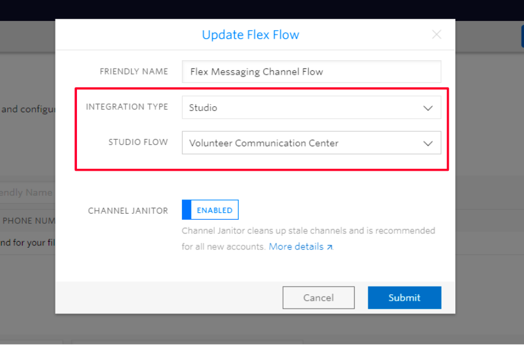
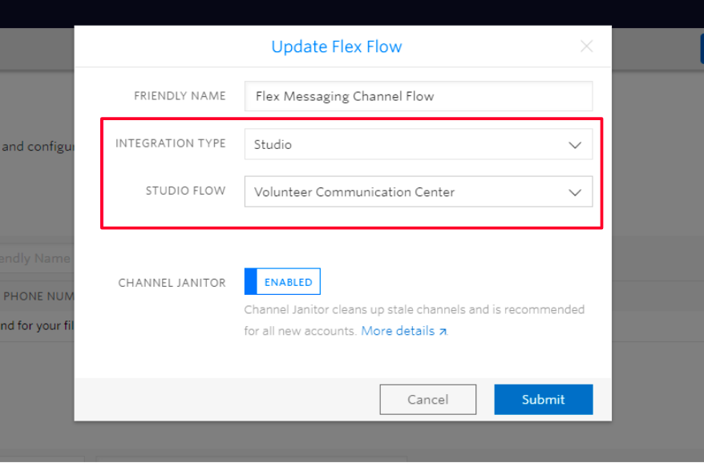
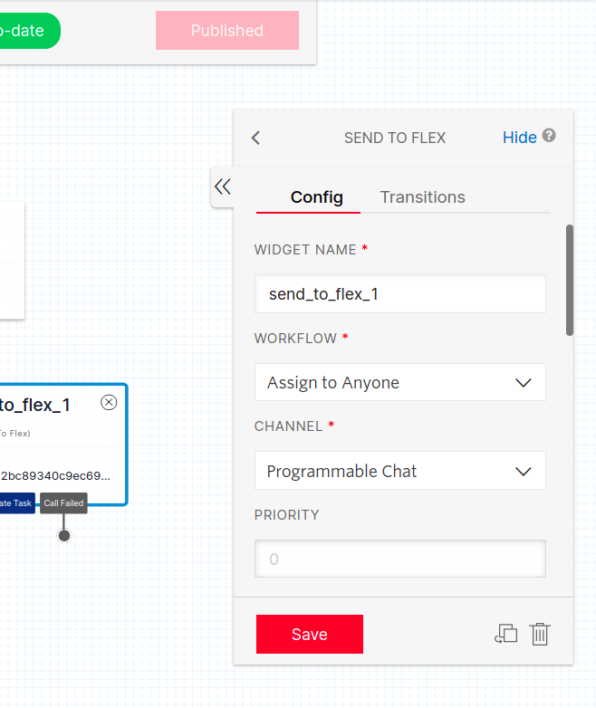
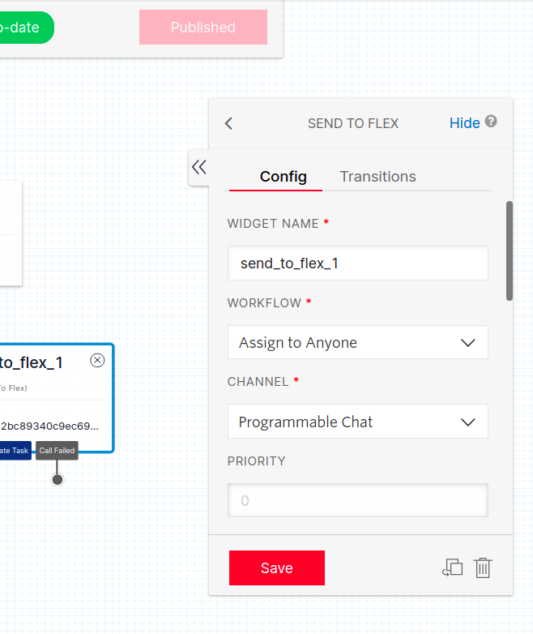

How it works
This template provides a quick way to build a simple communication center for volunteer coordinators in the disaster and crisis response space. Volunteers that have general, logistical questions can contact a Twilio phone number to get answers almost instantaneously. A pre-trained Autopilot bot exchanges a few messages to understand the question and tries to deliver a helpful response. In the case that the bot cannot fully understand the volunteer's question, it will redirect the conversation to an actual coordinator. While keeping the same conversation, a coordinator can respond in live time via the Flex console to ensure that the volunteer's question gets answered quickly and accurately.
Out of the Box
Congrats! You have successfully deployed your own instance of a volunteer communication center.
Twilio Flex
While bots are great, they don't replace humans. When the bot cannot answer a question for the volunteer, the Studio Flow passes the message on to a Flex console. The request will show up as an incoming issue which a coordinator can accept and address. They will continue the conversation where the Autopilot bot left off in order to get the volunteer help as fast as possible. There are just a few more setup steps.
Go to Phone Numbers in the console and select to change the configuration settings for Voice and Messaging to connect the Studio Flow you just deployed and the Flex Proxy Service.
Next, go to the Flex tab in the console and select Messaging from the side bar. Click the edit icon for and make sure that "Integration Type" and "Studio Flow" are set to "Studio" and "Volunteer Communication Center" respectively.
 

You should be all set! Click the button below to open up your Flex Console to start accepting calls and messages.
Go to FlexTroubleshooting
- Make sure that your Studio Flow is configured properly. Check the Autopilot and Flex widgets to ensure that they are pointing to the correct resources.
- Check your environment variables.
- If you are using a trial account, some features might be limited.
 
